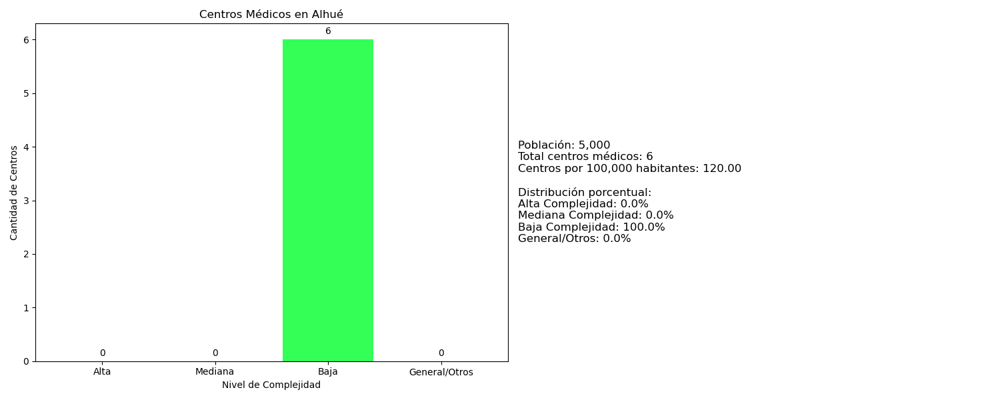

Introducción
La distribución espacial de la infraestructura sanitaria constituye un indicador fundamental que no solo evidencia el desarrollo urbanístico de una región metropolitana, sino que también pone de manifiesto las disparidades socioeconómicas inherentes a su tejido social. El presente estudio aborda un análisis geoespacial y sociodemográfico exhaustivo de los establecimientos de salud operativos en la Región Metropolitana de Chile, fundamentado en datos oficiales proporcionados por el Ministerio de Salud. Mediante la implementación de técnicas de visualización basadas en mapas de calor, esta investigación se propone identificar y caracterizar los patrones de distribución espacial, concentración y déficit en la localización de la infraestructura sanitaria, incluyendo hospitales, centros de atención primaria, clínicas y demás establecimientos de salud.
Visualización
La visualización ilustra la distribución geoespacial de los establecimientos de salud en la Región Metropolitana, categorizados según su nivel de complejidad asistencial, incluyendo hospitales de alta complejidad, centros de atención primaria, clínicas y centros médicos especializados. Este análisis cartográfico tiene como propósito fundamental examinar los patrones de distribución de la infraestructura sanitaria regional, permitiendo identificar las asimetrías existentes entre las zonas urbanas consolidadas y las áreas periféricas en desarrollo, contribuyendo así a una comprensión más profunda de la accesibilidad a servicios de salud en el territorio metropolitano.
Galería de Mapas por Comuna

Nota sobre los datos poblacionales
Para realizar este análisis, fue fundamental incorporar datos demográficos actualizados de cada comuna. Estos datos fueron extraídos del Sistema Integrado de Información Territorial (SIIT) de la Biblioteca del Congreso Nacional de Chile (BCN): ver fuente. Es importante mencionar que trabajamos con proyecciones poblacionales para el año 2024, lo cual nos permitió obtener una perspectiva más actualizada de la relación entre la infraestructura sanitaria y la población beneficiaria. La decisión de utilizar estas estimaciones se basó en la necesidad de contar con datos que reflejen de manera más precisa la realidad actual de las comunas estudiadas.
Metodología
La investigación se desarrolló mediante un análisis cuantitativo de datos geoespaciales, empleando técnicas de visualización avanzadas para representar la distribución de establecimientos sanitarios. La metodología incluyó:
- Recopilación y depuración de datos de establecimientos de salud
- Análisis geoespacial utilizando sistemas de información geográfica
- Categorización de centros médicos por nivel de complejidad
- Generación de mapas de calor para visualizar la distribución